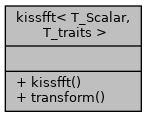

kissfft< T_Scalar, T_traits > 模板类 参考
#include <kissfft.hh>
kissfft< T_Scalar, T_traits > 的协作图:

Public 类型 | |
| typedef T_traits | traits_type |
| typedef traits_type::scalar_type | scalar_type |
| typedef traits_type::cpx_type | cpx_type |
Public 成员函数 | |
| kissfft (int nfft, bool inverse, const traits_type &traits=traits_type()) | |
| void | transform (const cpx_type *src, cpx_type *dst) |
成员类型定义说明
template<typename T_Scalar , typename T_traits = kissfft_utils::traits<T_Scalar>>
| typedef traits_type::cpx_type kissfft< T_Scalar, T_traits >::cpx_type |
template<typename T_Scalar , typename T_traits = kissfft_utils::traits<T_Scalar>>
| typedef traits_type::scalar_type kissfft< T_Scalar, T_traits >::scalar_type |
template<typename T_Scalar , typename T_traits = kissfft_utils::traits<T_Scalar>>
| typedef T_traits kissfft< T_Scalar, T_traits >::traits_type |
构造及析构函数说明
template<typename T_Scalar , typename T_traits = kissfft_utils::traits<T_Scalar>>
|
inline |
成员函数说明
template<typename T_Scalar , typename T_traits = kissfft_utils::traits<T_Scalar>>
|
inline |
该类的文档由以下文件生成:
- src/lib/external/kiss_fft/kissfft.hh